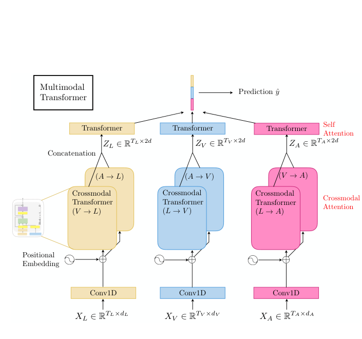
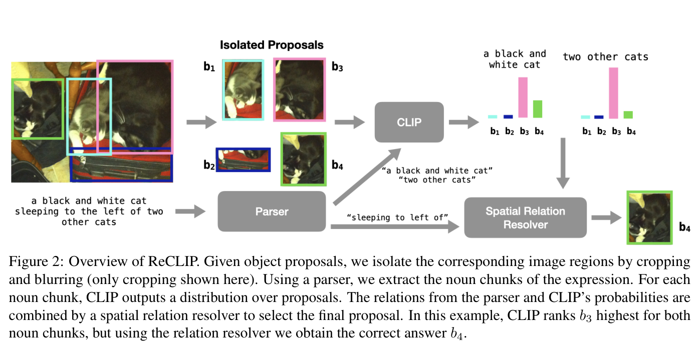

GazeMed from first principles: evidence, gaps, and the next model
A radiologist’s gaze is an imperfect pointer; speech is a delayed semantic trace. GazeMed asks whether their correspondence can localize the finding being described—and how that compact idea can grow without losing a falsifiable scientific claim.
01 · Motivation
Why does this problem need to exist?
A radiology report is primarily a semantic summary: it names a finding, describes its severity, compares it with prior studies, and communicates clinical relevance. Many computational tasks need something the report does not always state precisely—a region on the image. A sentence such as “mild right basilar opacity” identifies a concept and gives partial location, but it does not draw the boundary of the opacity.
During interpretation, however, a second trace is produced almost for free. The radiologist searches the image, fixates candidate evidence, verifies an impression, and then dictates the report. Their eyes provide spatial information; their words provide semantic information. Neither signal is sufficient alone:
Gaze answers “where was attention?”
It is dense in time and naturally tied to the image, but it contains search, comparison, distraction, and verification—not only the final lesion.
Speech answers “what is being described?”
It names findings and relations, but it is delayed, compressed, and often too coarse to recover an exact region by itself.
This is useful for more than drawing a box. A reliable finding-to-region link could support localized report review, evidence-aware decision support, interactive annotation, report–image consistency checks, and datasets in which statements are explicitly grounded. The immediate study is chest X-ray localization; the underlying problem is grounding language in a human visual process.
The challenge is correspondence, not simply attention
Gaze is often described as a proxy for attention, but that phrase hides the hard part. A radiologist may look at the right lower lung before saying “right basilar opacity,” glance at the left lung for comparison, return to the finding while dictating, or mention it only after finishing a broader search. The model must infer a latent correspondence:
Record raw gaze while the chest X-ray is interpreted.
Convert samples into fixations and a temporally ordered scanpath.
Timestamp the report and identify the mention of one finding.
Score which fixations are relevant to that mention.
Place the scores back at real coordinates to obtain a spatial prediction.
The project is therefore not “use gaze because gaze points at lesions.” It is “learn when gaze is acting as evidence for a particular linguistic reference, and test whether the learned correspondence survives controls designed to break it.”
02 · Foundations
What exactly are the signals?
REFLACX records the interpretation process rather than only the final image and report. It combines a chest X-ray, eye-tracker samples, timestamped report transcription, interface state, finding labels, and radiologist-drawn abnormality ellipses. Understanding the distinctions among these objects prevents several common conceptual errors.

One eye-tracker measurement. Samples are frequent and noisy; treating every sample as an independent intentional look overcounts dense measurements.
A short interval during which gaze is stable enough to summarize as a location, duration, and time range. It is the basic visual event used by the current model.
The rapid movement between fixations. Its path is not normally interpreted as inspected evidence, but the transition helps describe search behavior.
The ordered sequence of fixations and saccades. Order can reveal search, comparison, return, and verification patterns that a collapsed heatmap discards.
The timestamped report sentence or phrase associated with one finding label. Current association is produced by keyword rules plus a negation guard.
A coarse region drawn after interpretation to validate a finding’s location. It is training/evaluation supervision—not an input to test-time prediction.
Why gaze is useful—and why it remains weak evidence
A fixation inside a lesion is informative, but a fixation outside it is not automatically an error. It may represent a normal-side comparison, a search step, a check of a device, or an interface action. Conversely, a radiologist may identify a broad finding without inspecting every pixel inside the later ellipse. This asymmetry explains why a point-like gaze signal can support localization while still producing modest region-overlap scores.
See the synchronized collection process
03 · Problem definition
GazeMed’s input contract is its most important distinction
Many studies “use gaze,” but that phrase groups together different tasks. The decisive question is not whether gaze appears somewhere in the pipeline. It is who produces the gaze, when it is available, and what the deployed model is allowed to consume.
| Task | Gaze during training | Gaze during inference | Image during inference | Primary output |
|---|---|---|---|---|
| Gaze-supervised image model | yes | no | yes | classification or segmentation |
| Image–text phrase grounding | no | no | yes | region for a phrase |
| Interactive gaze prompting | optional | yes | yes | user-selected mask or region |
| Current GazeMed | yes | yes | no | region for a spoken finding |
The current model sees the new reader’s fixation sequence and report-derived features but does not see chest X-ray pixels. Its visual evidence is mediated through the radiologist. This makes the study scientifically clean: if localization improves, the improvement cannot come from an image encoder recognizing the opacity directly.
- full fixation sequence and coordinates,
- fixation timestamps and duration,
- matched finding mention,
- finding identity and compact text descriptors.
- hand-drawn finding ellipse,
- pixel-level lesion annotation,
- current chest X-ray image pixels,
- future events in a truly causal deployment.
The novelty should therefore be stated narrowly: finding-level localization from inference-time gaze–speech correspondence with learned temporal and spatial selection. It should not be stated as the first use of gaze in medical AI, the first use of gaze at inference, or the first CXR localization system.
04 · Data construction
How does one recorded reading become a training instance?
The model is trained at the level of a reading–finding pair, not an entire report and not an individual fixation. For every finding that is present and has an ellipse, the pipeline creates one instance that combines four synchronized objects.
patient, image, reader, full timeline
one of the annotated labels
matched sentence and word times
union of ellipses for that finding
- Choose a positive finding. The reading must mark the label as present and provide at least one ellipse.
- Find its spoken mention. Keyword expressions search the timestamped report, with a guard against negated statements.
- Keep the full fixation sequence. Every fixation receives features relative to the nearest mention rather than being discarded by a hard gate.
- Build the target region. Multiple ellipses for the same finding are rasterized as one union mask.
- Split by patient. Subject identifiers—not instances—define train, validation, and test, preventing the same patient from crossing splits.
Four audit findings already define the next work
Temporal features collapse and B1 falls back to ungated gaze. The comparison remains internally matched, but the baseline is especially exposed to the rule-based linker.
REFLACX includes looks at interface elements. The current objective gives them almost no mass, but filtering or an explicit “outside image” state is cleaner.
A splat-only localization head cannot win these cases because it is forbidden from placing a peak where nobody looked.
All headline conditions are compared on the same finding-level set, enabling paired rather than aggregate-only statistics.
The mention defines every fixation’s time offset and supplies the language query. A wrong mention corrupts both sides of the alignment problem. Replacing keyword matching with a validated clinical mention linker is therefore a model improvement, a baseline-fidelity improvement, and a measurement improvement at once.
05 · Method
The model, step by step
The current method is intentionally small. It does not generate a lesion from pixels. It learns a distribution over observed fixations and then renders that distribution in image coordinates.
Step 1 · Replace the fixed 1.5-second rule

The B1 baseline collects fixations in a fixed window before the report mention and makes a duration-weighted gaze heatmap. This is plausible because speakers often look at a referent before naming it. It is also rigid: reader-specific lag, sentence length, verification gaze, and finding complexity are compressed into one constant.
Step 2 · Give every fixation learnable temporal evidence
The Temporal-only model retains the full sequence and represents fixation i using six features:
Whether and how far the fixation lies before or after the nearest mention.
Temporal proximity without direction.
An explicit cue for the typical look-before-speak relation.
Whether the fixation would have been selected by the fixed heuristic.
How long gaze stayed stable at the location.
A local motion cue derived from consecutive fixations.
A small network converts these features into one score per fixation. Softmax turns the scores into attention weights. The temporal model still splats those weights at real coordinates, but coordinates do not influence which fixation receives weight.
Step 3 · Let language query positioned fixations
aᵢ = softmax(qᵀkᵢ / √d)
ℒ = −log( Σᵢ aᵢ · 𝟙[pᵢ ∈ ellipse] + ε ) − 0.01 · H(a)
The first term rewards attention mass inside the ellipse. Entropy regularization discourages all probability from collapsing onto one fixation. The loss trains selection; the output coordinates remain the observed gaze coordinates.
Why Fourier position matters here
Raw coordinates are only two numbers. Under the current cross-attention design, each fixation key is produced by a single linear projection. With raw (x,y), the spatial component of the score is therefore only a plane over the image. Fourier encoding lifts each coordinate into multiple sinusoidal bands, allowing the linear projection to express localized and alternating spatial preferences.
This is not a generic claim that Fourier features always beat raw coordinates. The complete 2×2 experiment shows an interaction: a two-layer concatenation MLP can build nonlinear functions from raw x/y, while a single linear key projection cannot. Cross-attention + Fourier wins; cross-attention + raw performs worst on Pointing. This is exactly why factorial ablations matter.
| Fusion | Position | IoU mean | Pointing mean | Interpretation |
|---|---|---|---|---|
| concat | Fourier | 0.3155 | 0.7616 | factorial origin |
| concat | raw x/y | 0.3197 | 0.7524 | raw is not a clear improvement |
| cross-attention | Fourier | 0.3391 | 0.7993 | selected on validation in 5/5 seeds |
| cross-attention | raw x/y | 0.3198 | 0.7204 | superseded architecture |
The code also concatenates the same finding embedding to every fixation key. Because that vector is constant across all fixations in one instance, it adds the same offset to every attention logit; softmax cancels the offset. Gradient inspection confirms near-zero influence. The label meaningfully conditions the query, not the key. The latest repository diagram now reflects this mechanism; code cleanup can remove the inert key-side term.

9e2d7e7.06 · Results
What does the latest evidence establish?
The PR changed materially after the previous version of this note. The frozen model is now cross-attention + Fourier position, and the claims were rerun across training seeds and patient splits. The table below reports means across five training seeds on the primary split unless noted otherwise.
Intersection over Union · IoU
area(prediction ∩ ellipse) / area(prediction ∪ ellipse)
The heatmap is blurred and thresholded into a region. Bandwidth and threshold are selected on validation for each method, then frozen for test.
Pointing game
1 if argmax(heatmap) lies inside ellipse; else 0
Pointing ignores region shape and asks whether the hottest pixel hits the ellipse. It is threshold-free but still affected by smoothing.
| Condition | Uses gaze | Uses image | IoU | Pointing | Question answered |
|---|---|---|---|---|---|
| B1 · fixed 1.5 s | yes | no | 0.2652 | 0.5837 | How far does the hand-designed gate go? |
| Temporal-only | yes | no | 0.2907 | 0.6789 | Does learned time selection help? |
| Final | yes | no | 0.3394 | 0.8029 | Do position and language improve selection? |
| Position-shuffled | corrupted | no | 0.2908 | 0.6653 | Does true fixation↔position correspondence matter? |
| Spatial-word-masked | yes | no | 0.3077 | 0.7462 | Does explicitly spatial language matter? |
| RadZero · best per metric | no | yes | 0.3165 | 0.7255 | Is gaze–speech localization competitive with image–text grounding? |
Source · GazeMed PR #3, latest head reviewed at 9e2d7e7. RadZero’s two values come from different bandwidths chosen to favor the baseline on each metric and are not one operating point.
Three causal claims are now supported consistently
Final exceeds Temporal-only on both metrics across all five training seeds and all five patient splits.
Within-instance position shuffling preserves the coordinate set but breaks which event owns which coordinate; performance drops significantly.
Masking the seven spatial descriptors degrades both metrics. The effect is significant in 9/9 distinct runs across the two sweeps.
The paired advantage survives a symmetric search, but RadZero consumes different inputs and has not yet been evaluated across patient splits.
The current model receives a complete fixation sequence; it has not yet been evaluated using only events available at the output clock.
Five splits resample one institution’s 2,110-subject pool; they do not test a new institution, reader population, or eye tracker.
The fixed-window comparison must be read on the subset where the gate exists
The keyword linker fails to find a mention for 16.5% of test instances. B1 then falls back to the full ungated gaze heatmap. The most faithful comparison is therefore the 913-instance mention-matched subset:
The fixed gate operates as intended on this subset.
Paired margin: +0.0729 IoU and +0.1950 Pointing; both remain strongly significant.
Variation across patients matters more than retraining noise
| Condition | IoU · five seeds | IoU · five splits | Pointing · five seeds | Pointing · five splits |
|---|---|---|---|---|
| B1 | 0.2652 | 0.2644 [0.2589, 0.2698] | 0.5837 | 0.5896 [0.5831, 0.5961] |
| Temporal-only | 0.2907 [0.2879, 0.2934] | 0.2876 [0.2836, 0.2916] | 0.6789 [0.6694, 0.6883] | 0.6634 [0.6443, 0.6825] |
| Final | 0.3394 [0.3374, 0.3414] | 0.3460 [0.3348, 0.3571] | 0.8029 [0.7924, 0.8134] | 0.8044 [0.7935, 0.8153] |
Split-to-split variance is 5.6 times seed-to-seed variance for IoU. Reporting only training seeds would therefore make the result look more certain than the choice of held-out patients permits.
Where the model works reveals what the output head cannot do
Final is strongest on broad findings such as enlarged cardiac silhouette, consolidation, atelectasis, and ground-glass opacity (IoU around 0.38–0.39). It is weaker on nodules or masses (0.156), pneumothorax (0.125), and acute fracture (0.047). This pattern is not merely “hard disease versus easy disease.” It reflects a geometric mismatch: the model paints blurred probability around a finite set of points, while small or thin structures require boundary-aware image evidence.
07 · Claim boundary
Test-time gaze is established. Real-time causality is not.
The current implementation computes a signed time difference between every fixation and the finding mention while receiving the full fixation sequence. A fixation that occurs after the phrase may influence the attention distribution. That is valid for synchronized-record localization, but not yet for an online system that must produce a result immediately.
A proper streaming experiment has three axes
Enforce fixation_end ≤ output_time and use only the ASR prefix available at that clock.
Measure phrase-end-to-prediction delay and report performance at several wait budgets.
Report the proportion of mentions with enough pre-mention gaze and the accuracy among emitted predictions.
A strong design is prefix replay: replay each reading event by event, run the model at the end of every candidate phrase, and draw a quality–latency curve. Monotonic or chunkwise attention from streaming speech research offers a useful inductive bias because gaze and speech mostly advance together while allowing short local reordering. The full-sequence model can serve as a teacher for a causal student, but the student must never see future fixations at training or evaluation time unless those inputs are explicitly masked.
08 · Related work
What should GazeMed borrow from adjacent fields?
The most useful literature is not a list of papers containing the word “gaze.” Each card below contributes a mechanism, a warning, or an evaluation pattern that can be translated into a concrete GazeMed experiment.
Direct lineage · the data and closest medical comparisons
REFLACX
Establishes the synchronized gaze, dictation, and ellipse data that make the task possible.
- Borrow
- Keep every clock and coordinate frame explicit.
- Do not assume
- A fixation is a lesion label or an ellipse is a pixel mask.
Label-specific eye-tracking supervision
Links report mentions to preceding gaze with a fixed gate and uses the resulting maps as training supervision.
- Borrow
- A simple, interpretable baseline and equal evaluation tuning.
- Advance
- Replace one global lag with learned, reader-aware soft alignment.
Eye-gaze Guided Multi-modal Alignment · EGMA
Uses synchronized gaze as privileged training information to improve image–text alignment and cross-dataset representation learning.
- Borrow
- Tri-modal alignment losses and gaze-weighted patch–sentence similarity.
- Difference
- EGMA discards gaze at inference; GazeMed currently keeps it.
GazeMedSeg
Turns noisy gaze heatmaps into multiple pseudo-mask levels and regularizes them with cross-level consistency.
- Borrow
- Treat spatial extent as uncertain rather than choosing one global heatmap threshold.
- Difference
- It studies annotation-efficient training, not finding-linked inference-time gaze.
Transferable mechanisms · beyond medical imaging

Sequential cross-modal alignment guided by human gaze
Models the empirical tendency to inspect an object before mentioning it and shows that sequential gaze is richer than an aggregated map.
- Borrow
- Encode the scanpath as a sequence and learn language-conditioned temporal progression.
- Test
- Does a recurrent or state-space scanpath encoder beat independent fixation scoring?

Multimodal Transformer · MulT
Uses directional cross-modal attention to connect sequences sampled at different rates without requiring a fixed pre-alignment.
- Borrow
- Let word tokens attend to gaze events and gaze events attend to acoustic or text context.
- Restrain
- Use shallow blocks or pretraining; REFLACX is too small for an indiscriminate large transformer.

ReCLIP
Shows that strong contrastive vision–language models are weak at spatial relations off the shelf and improves them with explicit parsing and relation resolution.
- Borrow
- Decompose “opacity below the right hilum” into figure, relation, and anatomical ground.
- Control
- Use relation-swapped hard negatives; label-only text must not solve the task.

Rad-SpatialNet
Represents radiology spatial language as frames containing a trigger, a finding, an anatomical ground, and relation-specific arguments.
- Borrow
- Replace seven flat direction flags with compositional anatomy-grounded frames.
- Measure
- Evaluate trigger detection, argument linking, and grounding separately.
LAVT and Mask Grounding
LAVT fuses language inside the visual encoder; Mask Grounding adds token-level supervision so difficult relations are grounded rather than merely pooled.
- Borrow
- Supervise word-to-region correspondence, especially for anatomy and relation tokens.
- Apply later
- This becomes most useful once an image branch is added.
Detecting Attended Visual Targets in Video
Treats gaze target as a temporally evolving prediction and explicitly handles the possibility that the target lies outside the visible frame.
- Borrow
- Temporal memory and an explicit “no reliable target yet” state.
- Translate
- GazeMed should abstain when the current prefix lacks finding-specific visual evidence.
Monotonic Chunkwise Attention
Constrains attention to advance online while retaining soft selection within a local chunk.
- Borrow
- A causal alignment prior and a latency-aware decoding framework.
- Caution
- Radiologists can return to earlier regions, so monotonicity should be soft or state-dependent.
Fourier Features
Explains why low-dimensional coordinates can be difficult for shallow networks to turn into high-frequency spatial functions.
- Borrow
- The current positional lift is mechanistically justified for a linear key projection.
- Extend
- Compare fixed bands with learned radial basis or anatomy-relative coordinates.
09 · Research gaps
What important uncertainty remains?
Mention identity
Keyword rules miss 16.5% of test mentions and may merge multiple findings in one sentence. The alignment target is noisy before the model sees it.
Needed: span-level clinical mention linking with negation, uncertainty, and coreference.Gaze intent
Independent fixation scoring does not know whether a look is search, comparison, confirmation, or interface use.
Needed: latent reading phases or a scanpath state model.Spatial language
Seven binary words cannot represent “below the right hilum,” “along the lateral pleura,” multiple regions, or negated relations.
Needed: compositional frames grounded in anatomy.Spatial extent
The output can only blur observed points. It cannot infer a thin pleural line or expand a fixation into a visually coherent lesion boundary.
Needed: adaptive uncertainty kernels or an image-conditioned boundary head.Causal availability
Full-sequence evaluation permits post-mention gaze. The operational latency and coverage of a prefix-only model are unknown.
Needed: event replay and quality–latency curves.Population shift
All splits come from one REFLACX pool. Reader habits, hardware calibration, and institutional reporting style may shift together.
Needed: leave-one-reader/device/site-out evaluation.10 · Synthesis
Promising idea combinations
The strongest next ideas combine one unresolved failure with one mechanism from the literature. Each proposal below includes the result that would justify keeping it and the control that could falsify its story.
Parse each mention into finding, laterality, vertical zone, anatomical ground, relation, extent, uncertainty. Convert the frame into soft masks or embeddings over lungs, pleura, mediastinum, hila, heart, and ribs. Express fixation coordinates both globally and relative to the referenced anatomy.
- Why it may work
- “Below the right hilum” is a relational constraint, not a bag of the words below and right.
- Decisive control
- Swap relations or anatomical grounds while preserving finding words; performance should fall on relation-sensitive cases.
- Main risk
- An anatomy prior may solve common labels without using per-instance language.
Train and evaluate on gaze and ASR prefixes at explicit output clocks. Use monotonic chunkwise attention or a small streaming state-space model so the alignment advances through the reading while allowing brief local revisits.
- Why it may work
- The clinical process is ordered, but look-before-speak lag varies locally.
- Decisive control
- Compare full sequence, legal prefix, fixed wait, and randomized future-context access at equal latency.
- Main risk
- Some findings may have insufficient pre-mention gaze; coverage must be reported, not hidden.
Create controlled pairs by horizontally mirroring coordinates and swapping left/right, or by exchanging upper/lower anatomy masks where valid. Train a contrastive consistency loss: the prediction should transform with the counterfactual rather than remain attached to the label prior.
- Why it may work
- It supplies direct supervision for spatial compositionality without requiring new ellipses.
- Decisive control
- Apply the geometric transform without the language swap and the language swap without geometry; only the matched intervention should preserve performance.
- Main risk
- Not every pathology or report relation is anatomically symmetric.
Keep the current attention map as an interpretable prompt, then let a small CXR encoder or promptable segmenter expand that prompt along image evidence. Use positive gaze peaks, low-attention anatomy as negative prompts, and language to select the target concept.
- Why it may work
- Gaze identifies the neighborhood; pixels recover extent and thin boundaries.
- Decisive control
- Compare image-only, gaze-only, late fusion, and correspondence-shuffled fusion at equal capacity.
- Main risk
- The image branch may dominate, making gaze an ornamental prompt rather than causal input.
Infer latent states such as global search, candidate inspection, contralateral comparison, verification, and dictation. Condition transition timing on a low-dimensional reader embedding estimated from a short calibration sequence.
- Why it may work
- A single Δt mapping assumes all looks have the same role and all readers speak with the same lag.
- Decisive control
- Evaluate leave-one-reader-out with and without a few-shot calibration period.
- Main risk
- REFLACX has few radiologists, so a flexible personalization model will overfit identities.
Estimate confidence from ASR quality, mention ambiguity, fixation dispersion, available pre-mention mass, and agreement between temporal and spatial branches. Emit a localization only when expected risk is below a chosen threshold.
- Why it may work
- Some inputs are structurally unwinnable; forcing a heatmap converts missing evidence into false precision.
- Decisive control
- Report risk–coverage and calibration curves, not only average IoU among accepted cases.
- Main risk
- Abstention can selectively discard rare or difficult findings and worsen equity.
Combine an image expert, a gaze–speech expert, and an anatomy-language expert through a reliability gate. Require each expert to produce its own prediction before fusion so complementarity can be measured rather than assumed.
- Why it may work
- Pixels, behavior, and anatomy fail in different ways: boundaries, correspondence, and priors respectively.
- Decisive control
- Measure oracle complementarity, conditional gains by finding size, and modality dropout before training a large joint model.
- Main risk
- More parameters can improve a table without validating the gaze–language mechanism.
Return the provisional region to the radiologist and treat a confirming glance, a corrective glance, or a short phrase such as “more lateral” as a second interaction turn. The system becomes an active grounding assistant rather than a passive observer.
- Why it may work
- Gaze and language are naturally available as low-friction corrective prompts.
- Decisive control
- Compare correction time and final localization with mouse clicks, gaze only, speech only, and combined interaction.
- Main risk
- Feedback can change reading behavior and introduce automation bias; this requires a prospective user study.
11 · Research program
Which experiments should come first?
A coherent program should reduce uncertainty in dependency order. It is inefficient to build a large tri-modal model before knowing whether the mention linker, causal prefix, and anatomy prior explain the present gain.
Snapshot the PR head, instance keys, splits, tuning grids, and per-instance predictions. Eliminate number drift between the paper, site, and scripts.
Hand-audit a stratified sample; compare regex, a clinical labeler, and span-level linking. Report mention precision/recall and downstream localization on the same cases.
Define output clocks, prevent future gaze, and plot IoU/Pointing/coverage against latency.
Add anatomy, relation, extent, negation, and uncertainty one factor at a time, then complete a factorial test of parser × coordinate representation.
Run left/right mirror, relation swap, anatomy-ground swap, position shuffle, and label-preserving text controls.
Only after E1–E4, test whether gaze prompts and pixels are complementary, especially for nodules, pneumothorax, and fractures.
Leave one reader out, perturb calibration, vary temporal lag, and—when possible—test another gaze dataset or acquisition setup.
Every experiment needs the control that matches its story
| Claim | Positive comparison | Required falsification | Report beyond IoU |
|---|---|---|---|
| language understands relations | structured frame > flat words | relation/anatomy swap | frame extraction F1; relation-conditioned accuracy |
| model is causal online | prefix model > fixed wait | future-context leak test | latency, coverage, risk–coverage |
| image and gaze complement | fusion > each expert | position shuffle and modality dropout | gain by finding size and input reliability |
| reader adaptation helps | few-shot adapted > global | shuffled reader identity | leave-one-reader-out confidence interval |
| boundary head adds extent | prompted mask > Gaussian splat | random or anatomy-only prompts | Dice, boundary distance, calibration |
12 · Recommendation
Preserve the compact mechanism; deepen the evidence around it
The latest PR establishes a stronger base than the earlier note described. Learned temporal alignment improves on the fixed gate; positioned cross-attention improves on timing alone; position and spatial-language controls now hold on both metrics across distinct seed and split runs. The project does not need a larger model to become interesting.
Freeze the evidence, validate mention linking, correct the architecture diagram, and run causal prefix replay.
Use Rad-SpatialNet-style frames, anatomy-relative coordinates, and counterfactual relation tests.
Add an image-conditioned boundary stage for small and thin findings while preserving gaze–speech as a separately measurable expert.
Study calibration, abstention, reader adaptation, and correction loops prospectively.
Primary sources
- GazeMed PR #3 — implementation, technical specification, controls, factorial architecture study, corrected mechanism diagram, and reproduction scripts. Reviewed at head
9e2d7e7. - Bigolin Lanfredi et al. (2022), REFLACX — synchronized gaze, dictation, interface, and ellipse dataset.
- Bigolin Lanfredi et al. (2023) — label-specific fixed-window eye-tracking supervision.
- Ma et al. (2024), EGMA — gaze-guided medical image–text alignment.
- Zhong et al. (2024), GazeMedSeg — multi-level gaze supervision for weak medical segmentation.
- Ghelichkhan & Tasdizen (2025), LATTE-CXR — gaze-derived and expert region–sentence pairs.
- Takmaz et al. (2020) — sequential gaze–language coordination in image description.
- Tsai et al. (2019), MulT — cross-modal attention for unaligned multimodal sequences.
- Subramanian et al. (2022), ReCLIP — explicit spatial relation resolution for zero-shot referring expressions.
- Datta et al. (2020), Rad-SpatialNet — frame-based radiology spatial semantics.
- Yang et al. (2022), LAVT and Chng et al. (2024), Mask Grounding — fine-grained language-conditioned segmentation.
- Chong et al. (2020) — temporally evolving gaze targets and out-of-frame states.
- Chiu & Raffel (2018), MoChA — monotonic local attention for online sequence transduction.
- Tancik et al. (2020), Fourier Features — lifting low-dimensional coordinates for high-frequency functions.